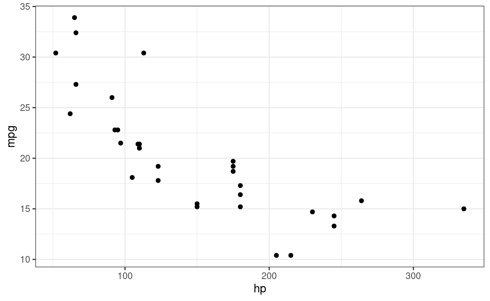
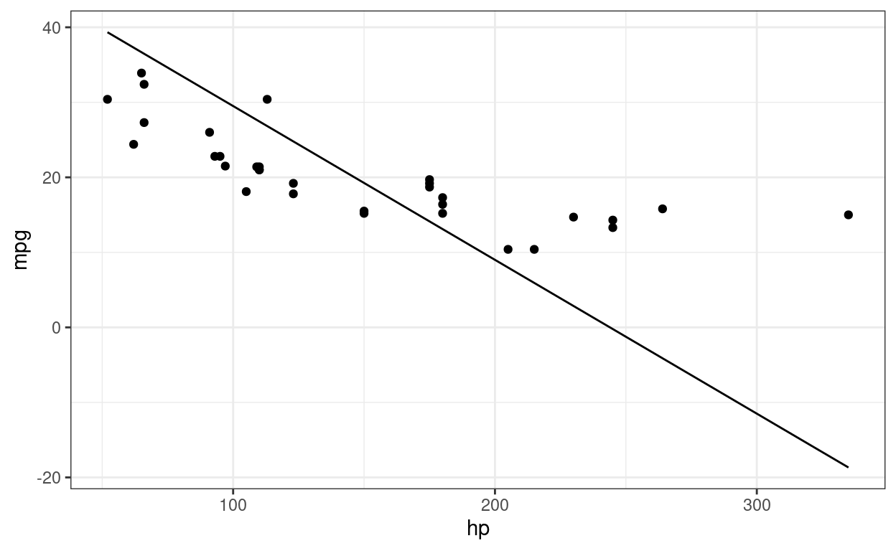
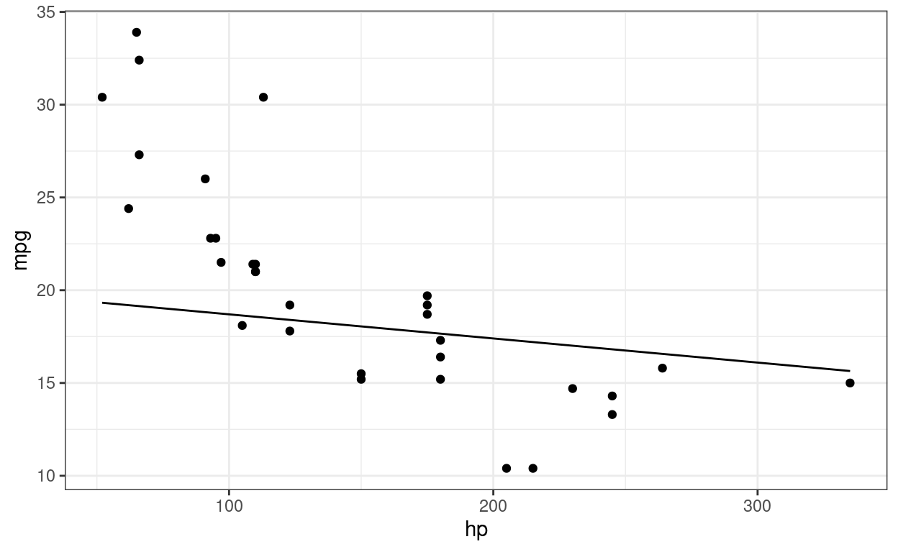
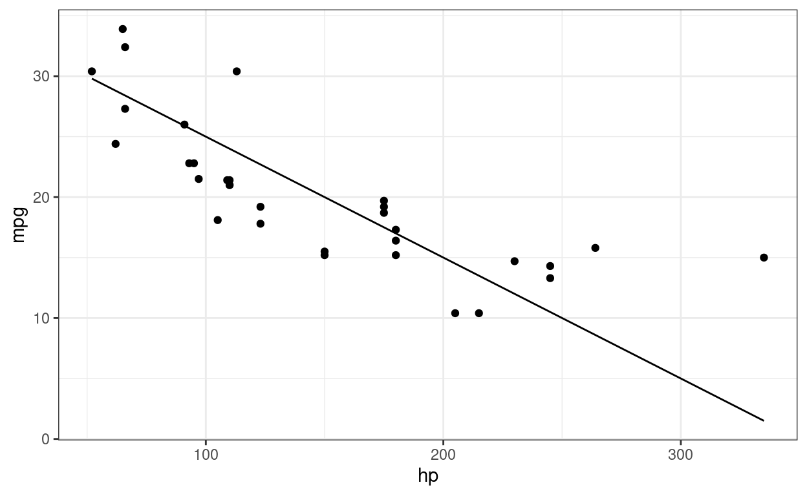
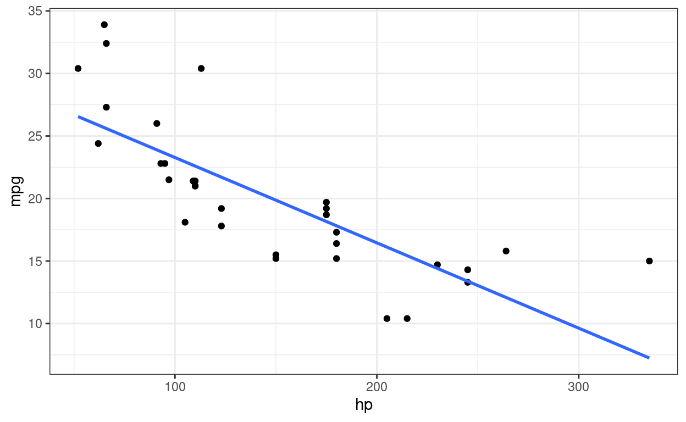

This tutorial focuses on simple linear regression. This tutorial will focus on different methods in conducting a simple linear regression in R. You only need to do section 1 and 2 to learn how to do SLR in R.
For this tutorial, we will use the mtcars data set and comparing the the mpg (dependent) variable with the hp (independent) variable.
Through out this tutorial, we use certain notations for different components in R. To begin, when something is in a gray block, _, this indicates that R code is being used. When I am talking about an R Object, it will be displayed as a word. For example, we will be using the R object mtcars. When I am talking about an R function, it will be displayed as a word followed by an open and close parentheses. For example, we will use the mean function denoted as mean() (read this as “mean function”). When I am talking about an R argument for a function, it will be displayed as a word following by an equal sign. For example, we will use the data argument denoted as data= (read this as “data argument”). When I am referencing an R package, I will use :: (two colons) after the name. For example, in this tutorial, I will use the ggplot2:: (read this as “ggplot2 package”) Lastly, if I am displaying R code for your reference or to run, it will be displayed on its own line. There are many components in R, and my hope is that this will help you understand what components am I talking about.
Linear Relationship
SLR via lm()
SLR via optim() and minimizing least-squares
SLR via (%*%) matrix multiplication
Questions
When we are comparing two continuous variables, we are measuring the association between them. We want to know how does one variable change when the other variable increases or decreases. There are two methods to measure this association: a correlation or linear regression.
To begin, lets compute the mean of both mpg and hp from the mtcars data set. Note that the tidyverse:: is loaded.
mean(mtcars$mpg)
mean(mtcars$hp)
# OR
mtcars %>% summarise(mean(mpg), mean(hp))The correlation coefficient is a statistic used to measure the association between 2 variables. The value range from -1 to 1. To compute the correlation coefficient, use the cor(). You will only need to specify the x= and y= which indicate the vectors of data to compute the correlation. Compute the correlation between the variables mpg and hp.
cor(mtcars$mpg, mtcars$hp)If you want to compute a hypothesis test for the correlation, you can use the cor.test(). It only needs the same argument as the cor(). Conduct a hypothesis test for the correlation between the variable mpg and hp.
cor.test(mtcars$mpg, mtcars$hp)With linear regression, we are trying to fit a line such that all the points are closest to the line as possible. Below is the scatter plot of hp vs mpg

As you can see, there is a negative association. As hp goes up, mpg goes down. What we want to do is fit a line where all the points are closest to the line. The next four plots demonstrates how a line is fitted. Linear regression searches for a line until the distance between all the points and the line are smallest possible. The fourth plot with the blue line indicates the best fit line.

Notice how the points at the end of the plot are further away from the line.

This is much better, but the points at the beginning are further away.

This plot provides a better fit of the data.
## `geom_smooth()` using formula 'y ~ x'
This contains the fitted line from the linear regression.
Mathematically, we are try trying to find the values for an equation of a line that fits the data. The equation of the line for the \(i^{th}\) point is
\(Y_i= \beta_0 + \beta_1 X_i + \varepsilon_i,\)
where \(Y_i\) is the \(i^{th}\) outcome, \(X_i\) is the \(i^{th}\) predictor, \(\epsilon_i\) is the \(i^{th}\) error term, \(\beta_0\) is the intercept, and \(\beta_1\) is the slope. The error term is the distance between the line and the point. Therefore, we want to minimize the error term:
\(\varepsilon_i = Y_i-\beta_0 -\beta_1 X_i\)
Because some of the error terms are negative (points are below the line), we will need to square it. Lastly, we want to minimize all the points, so we add all observations together and minimize the following least-squares formula:
\(\sum_{i=1}^n(Y_i-\beta_0 -\beta_1 X_i)^2\)
We will need to find the values of \(\beta_0\) and \(\beta_1\) that minimizes the least-squares formula. We can use the Ordinary least-squares (OLS) or the Maximum Likelihood Estimation (MLE) estimators to obtain the these estimates.
lm()Fitting the model means finding the estimates of \(\beta_0\) and \(\beta_1\) that minimizes the least-squares formula, which is denoted with hat: \(\hat \beta_0\) and \(\hat \beta_1\). In R, we can obtain these estimates using the lm(). The lm() function only needs the formula= and the data= as inputs. The output of the lm() is an lm R class that contains information about the model.
Conduct a linear regression where mpg is the dependent variable and hp is the independent variable. Store the output from the lm() in the R object xlm.
xlm <- lm(mpg~hp, data = mtcars)To view the coefficients from the lm(), you only need to print the object.
xlmThe output shows a “Coefficients” section where it shows the value of \(\beta_0\) under “Intercept” and \(\beta_1\) under the variable name (in this case “hp”).
The best way to obtain the output from the lm class is to use the summary().
summary(xlm)The results from the summary() provide statistics on the residuals, a coefficient table with corresponding hypothesis test, and other relevant statistics for model fit.
Focusing on the coefficient table, it provides information for each variable (labeled in the rows section). For each regression coefficient, the table provides an “Estimate”, “Std. Error”, “t value”, and “Pr(>|t|)”. The p-value corresponds to the following hypothesis test:
\(H_0: \beta = 0\),
and
\(H_1: \beta \neq 0\).
optim()This section focuses on finding the \(\beta\) parameters using the optim(). The optim() is a function that numerically finds the values that minimizes an equation. The only condition with the optim() is that the parameters of interest to minimize the equation must be grouped together as a vector. For the rest of this section, we will go step by step to minimize the least-squares formula with the optim(). If you recall from the previous section, \(\beta_0=30.1\) and \(\beta_1=-0.068\). We will obtain the same results with optim().
We are going to minimize the least-squares function
\[ LS = \sum^n_{i=1}(Y_i-\beta_0-\beta_1\times X_i)^2 \]
First, we need to create a function in R that will provide the value for LS. This is done with the `function()`.
The least-squares function say for every \(i^{th}\) observation, we must take its \(Y_i\) value and subtract it by \(\beta_0\) and the product of \(\beta_1\) and its \(X_i\) value. Second, we square the result obtained. Lastly, we add all the obtained values. This can be achieved by implementing a loop or using vectorized code. I will demonstrate the vectorized code for now. However, I encourage you to think about how to implement a loop.
To begin, I created a vector called X and vector Y that contains all the data for hp and mpg, respectively. Print them out below:
X
YNow, let’s say \(\beta_0=1\), subtract each value of Y from \(\beta_0\) in R:
Y - 1Notice how all the values are smaller by one. When you subtract a vector by a number, it will subtract it for each element.
Now, let’s say \(\beta_1=10\), subtract each value of Y by \(\beta_0\) and the product of \(\beta_1\) and X.
Y - 1 - 10 * XNotice how each value followed what was inside the parenthesis in the formula. This is because R will take each element in X and Y, and apply the formula.
Now, let’s square the result.
(Y - 1 - 10 * X) ^ 2The last thing is to add them all up. Notice how the output is a vector. We can just apply the sum().
sum((Y - 1 - 10 * X) ^ 2)The last thing is that we need to put the values of \(\beta_0\) and \(\beta_1\) in a vector. Before we begin, I put the values one and ten in an object called beta. Print it out.
betaNow change the last code from the last least-squares exercise to include beta instead of the numbers.
sum((Y - beta[1] - beta[2] * X) ^ 2)You should get the same values of before. Now you have the general form of the least-squares equation. All we need to do is use the code to create the function. Use the function() to create a new function called sums_squares that takes the arguments beta, X, and Y.
sums_squares <- function(beta, X, Y){
sum((Y - beta[1] - beta[2] * X) ^ 2)
}Note: Use the solution code to ensure it works.
optim()Now that the function has been created, we can minimize it. A function can be minimized using the optim() function. We just need to specify initial values for the argument of interest (c(0,0)), the sums_square(), and set X=X and Y=Y. The code for the optim() is provided below:
optim(c(0,0),sums_squares,X=X,Y=Y)optim(c(0,0),sums_squares,gr=NULL,X=X,Y=Y)The values of \(\beta\) are provided in the $par element from the output. This matches the output from the lm(): \(\beta_0=30.1\) and \(\beta_1=-0.068\).
%*%The least-squares formula can be represented with matrices instead. First we have
\[ \boldsymbol \beta = \left(\begin{array}{cc} \beta_0 \\ \beta_1 \end{array} \right), \]
\[ \boldsymbol X = \left(\begin{array}{cc} 1 & X_1\\ 1 & X_2\\ \vdots & \vdots\\ 1 & X_n\\ \end{array} \right), \]
and
\[ \boldsymbol Y =\left(\begin{array}{c} Y_1\\ Y_2\\ \vdots\\ Y_n \end{array} \right). \]
\(\boldsymbol X\) is a \(n \times (p+1)\) matrix where each column represents value of the variable in the model. The first column is a vector of ones used to represent \(\beta_0\).
Then, we can minimize the following least-squares formula:
\[ \left(\boldsymbol Y - \boldsymbol X^\mathrm T \boldsymbol \beta \right)^\mathrm T \left(\boldsymbol Y - \boldsymbol X^\mathrm T \boldsymbol \beta\right) \]
The \(\hat \beta\) coefficients that minimizes the least-squares formula is
\[ \hat \beta = (\boldsymbol X^T \boldsymbol X)^{-1}\boldsymbol X ^T\boldsymbol Y. \]
To obtain \(\hat \beta\), you must use the matrix multiplication operator (%*%), the solve() to invert a matrix, and the t() to transpose a matrix. Now use the R objects Y and XX (XX is a \(n\times 2\) matrix with the first column being a vector of one’s and the second column representing the values of X) to find \(\hat \beta\)
solve(t(XX)%*%XX)%*%t(XX)%*%Y